01
Transparence & Égalité
Une gestion ouverte et responsable, avec un accès équitable aux services pour toutes et tous.
Eau • Hygiène • Assainissement
Parce que l'accès à l'eau potable et à l'hygiène est un droit fondamental, l'ONG Vision Citoyenne agit chaque jour aux côtés des écoles et des communautés de Côte d'Ivoire.
Ils nous accompagnent
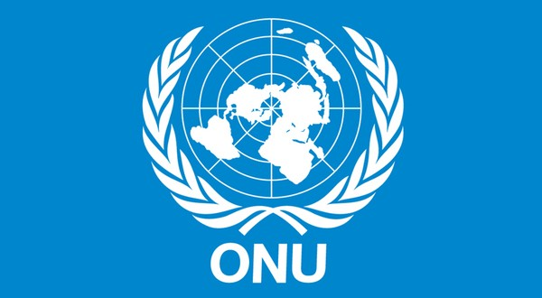
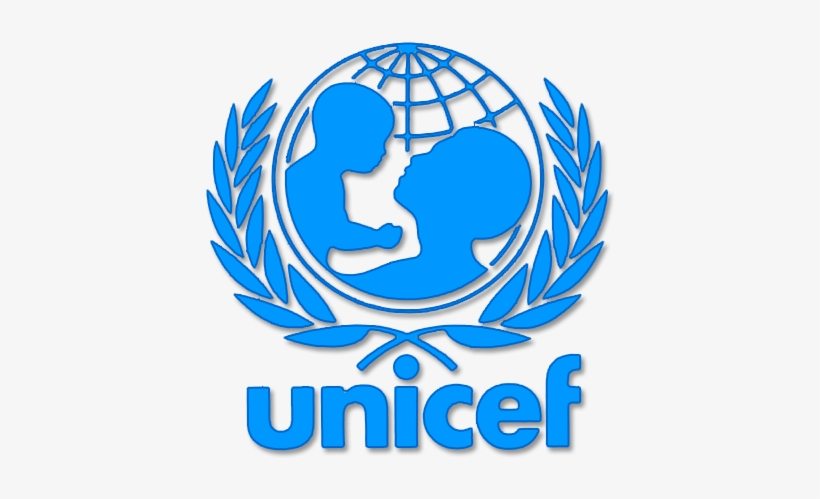
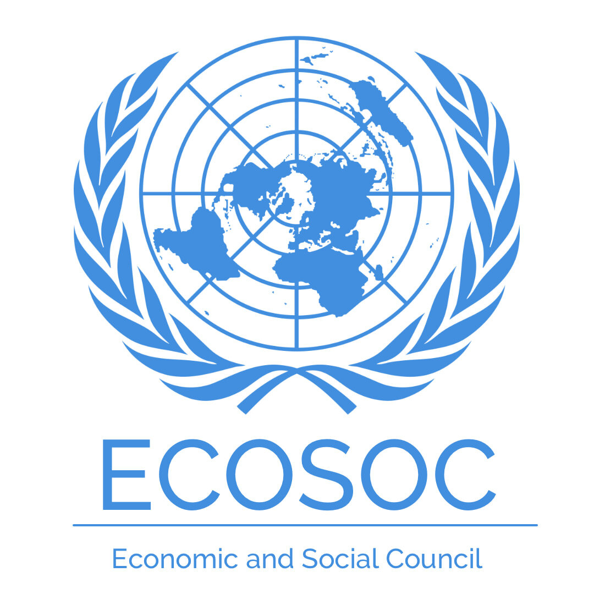
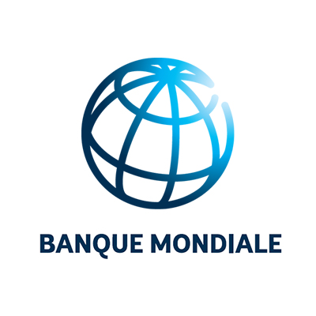
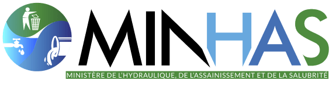
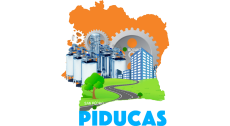
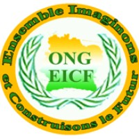
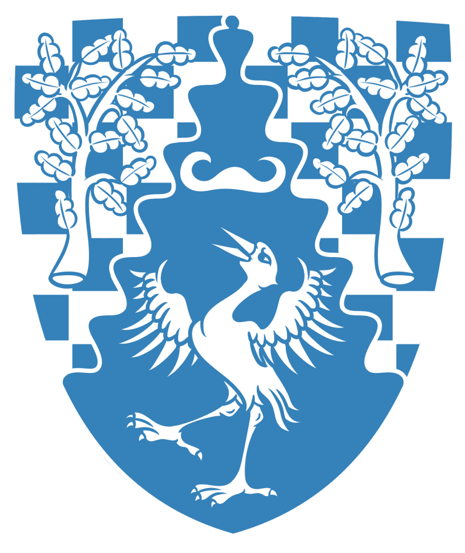
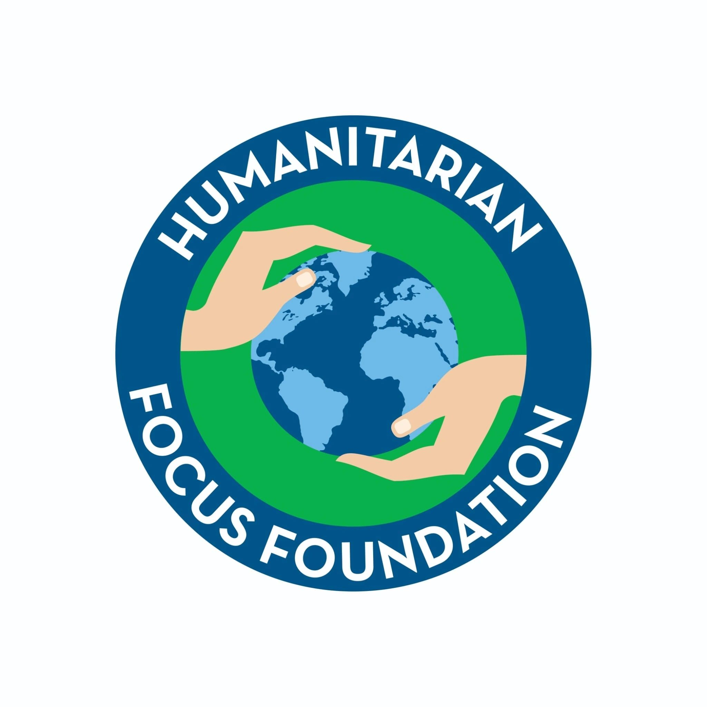
Une vision claire : garantir l'eau, l'hygiène et l'assainissement pour tous, à l'école comme dans la communauté.
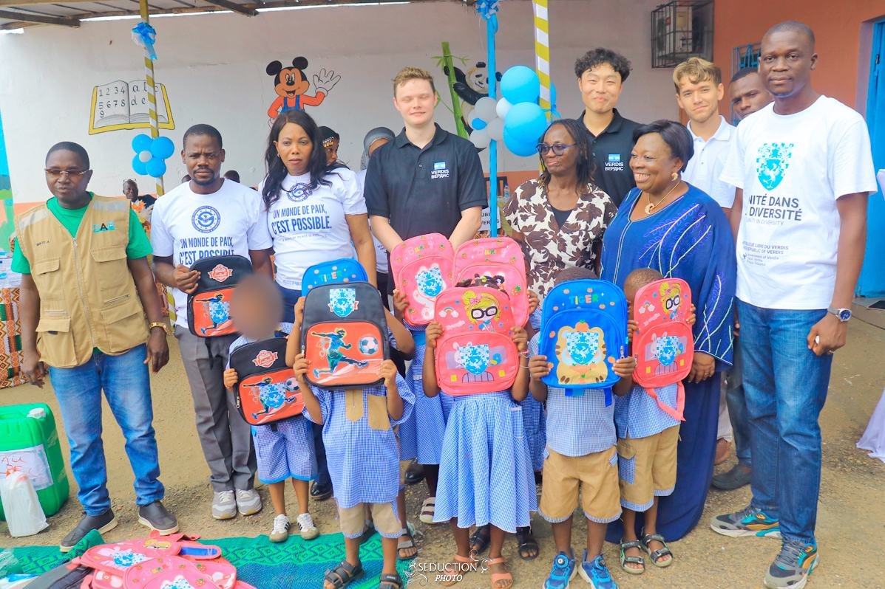
Fondée le 6 juin 2018
L'ONG Vision Citoyenne œuvre pour que chaque enfant et chaque famille dispose d'un accès sûr à l'eau potable, à des latrines dignes et aux bonnes pratiques d'hygiène.
Nous construisons des points d'eau et des latrines, formons les comités de gestion et menons des campagnes de sensibilisation à l'hygiène dans les écoles et les communautés, avec transparence et proximité.
Un monde où chaque école et communauté dispose d'eau potable et d'assainissement digne.
Améliorer durablement l'accès à l'eau, l'hygiène et l'assainissement au service de la santé et de l'éducation.
Dignité, durabilité, transparence et engagement communautaire.
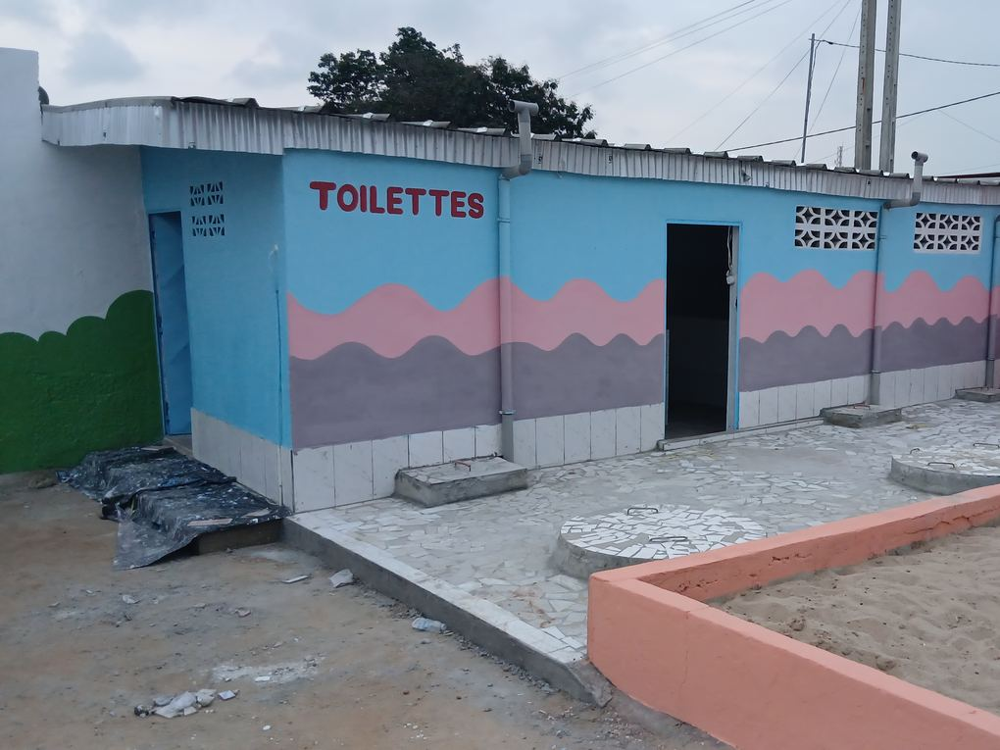
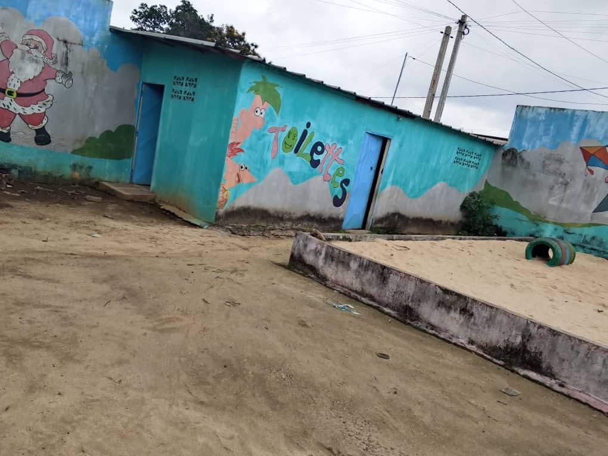
Avant AprèsFaites glisser pour comparer avant / après
Inaugurée le 9 septembre 2026
À l'École Primaire Publique SICOGI 1, nous avons réhabilité les sanitaires et redonné aux élèves un cadre digne, sûr et joyeux pour apprendre.
Inaugurée aux côtés de l'IPPDR, de la République Libre de Verdis et de la communauté locale.
Cinq engagements fondamentaux au cœur de notre action, chaque jour et dans chaque projet.
Une gestion ouverte et responsable, avec un accès équitable aux services pour toutes et tous.
Nous rendons des comptes à nos communautés, à nos partenaires et à nos bénéficiaires.
La dignité de chaque personne est la boussole de nos interventions et de nos choix.
Nous agissons selon les besoins, sans distinction d'origine, de croyance ou d'appartenance.
Compétence, rigueur et qualité — de la conception au suivi de chaque projet sur le terrain.
Nous agissons pour l'eau, l'hygiène et l'assainissement là où les besoins sont les plus grands.
Forages, puits, réseaux et points d'eau pour approvisionner écoles et communautés en eau saine.
Construction de latrines dignes et séparées dans les écoles et gestion des eaux usées.
Sensibilisation au lavage des mains, dispositifs de lavage et éducation à l'hygiène.
Programmes eau-hygiène-assainissement dans les écoles pour la santé et la réussite des élèves.
Accompagnement des filles : sensibilisation, kits et installations adaptées pour rester à l'école.
Formation des comités de gestion de l'eau et pérennisation des ouvrages par les communautés.
Vision Citoyenne intervient aussi sur les enjeux transversaux qui touchent les mêmes communautés.
De la fondation de l'ONG à nos chantiers d'aujourd'hui : les étapes qui ont construit notre action.
L'ONG est fondée le 6 juin 2018 à Abidjan avec une mission claire : l'eau, l'hygiène et l'assainissement pour tous.
Points d'eau et latrines construits ou réhabilités dans les écoles, comités de gestion formés à l'hygiène.
Formation aux activités génératrices de revenus et accompagnement de coopératives agricoles féminines.

Matériel d'hygiène remis au Lycée Moderne Inagohi, avec les enseignants et les élèves.
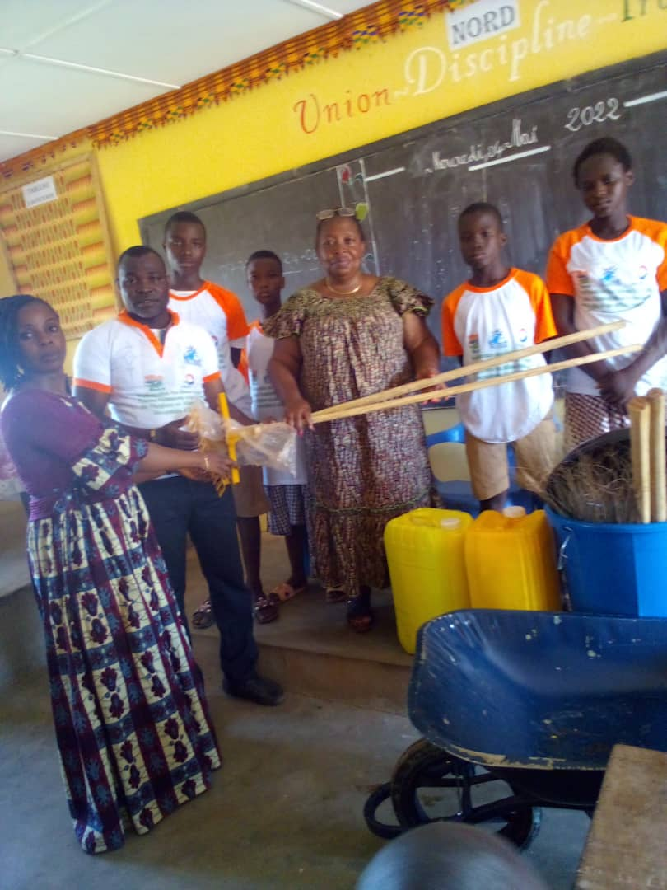
Sessions sur l'hygiène, le lavage des mains et la citoyenneté dans les écoles de San Pedro et du Nord.
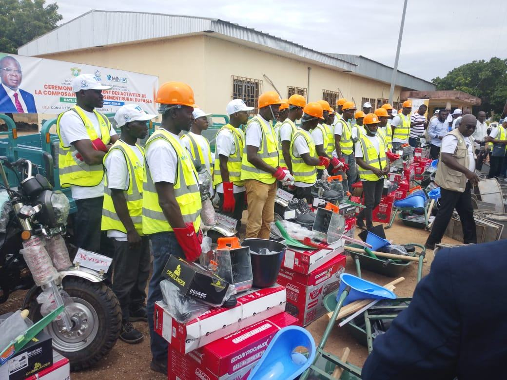
Formation des artisans du 1er au 10 juin 2026, puis lancement officiel le 13 juin à Katiola.
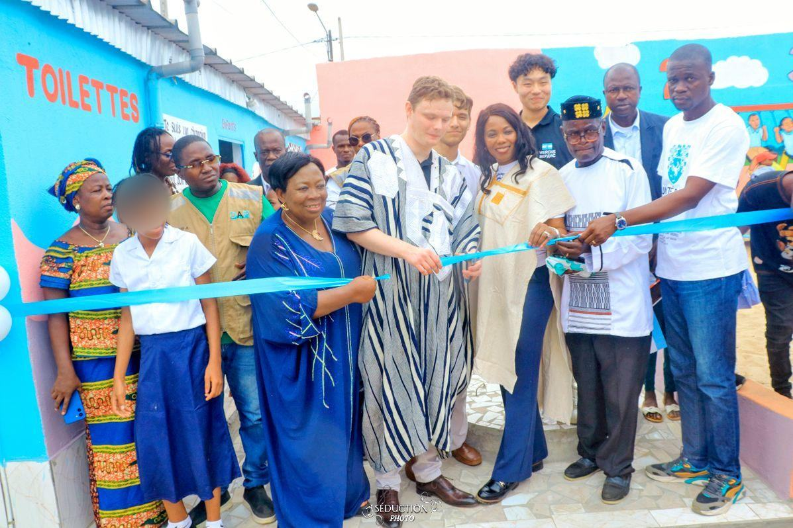
École rénovée et inaugurée le 9 septembre 2026 : sanitaires, peinture, aire de jeux et fresque éducative.